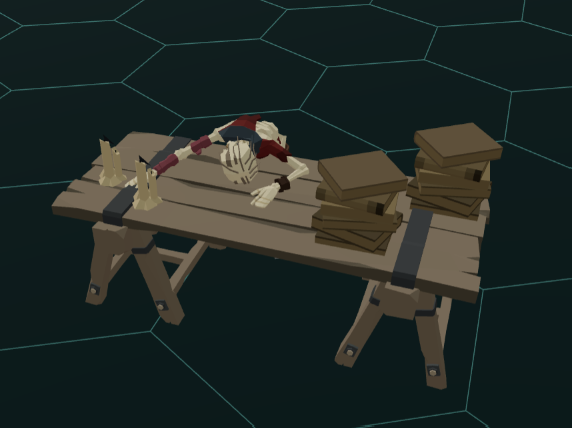
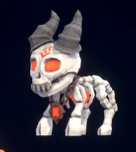

A World Worth Exploring
Clock and intel let someone stay outside a fight. I started thinking about what that player could do instead. A table, some books, candlelight, and a small plushie became part of building toward the Living World.
Someone could stay behind
The clock gave free roam a clear place in the encounter. When the relevant intel landed, a local fight could form without pulling everybody into it. Seeing that happen was exciting. The player who stayed behind wasn’t waiting for the others to finish their turns. They could keep moving.
I remember thinking: they could be searching for something. That freedom raised a different question about the game. What kind of place could I give them to explore?
Somewhere worth searching
I wanted to make a place that could be searched, but our props were still basic. The new studio and prop composition helped me get beyond that. One memorable thing I made was a table with books and a lit candle. It was a small scene, but it gave that ambition something concrete to look at.

Putting the pieces together
Blender-like navigation and placement controls let me work directly with the scene. I could arrange the objects and adjust the candlelight. The hex grid was a reference, not a set of slots that kept a table and its decorations apart.
The relationships mattered too. Moving a table could carry its supported candle, while the candle stayed independently editable. A saved arrangement could become two copies; changing one didn’t change the other. The tool could preserve the work of putting the pieces together without making them inseparable.
The plushie wasn’t just scenery

The plushie had another role. I used it to test the holdable objects we were adding to the encounter. I remember that, when I was holding it, the monsters were not hostile. A small prop could matter to more than the appearance of the room.
Arranging the model and giving the object that role were different jobs. The studio handled the scene; the encounter handled holding and hostility. A visible object wasn’t automatically an interactive one.
Something else to do
These weren’t one finished search-and-discovery system. They were pieces that made the game easier to build: a place I could compose, an object I could give meaning, and a player who didn’t have to join every fight. I could begin to see how those pieces might meet.
Who learned what would need more thought too. Later, we would revisit room-wide intel and look more closely at hearing and line of sight.
Letting someone stay behind opened a possibility.
I was beginning to have the tools to give them something else to do.